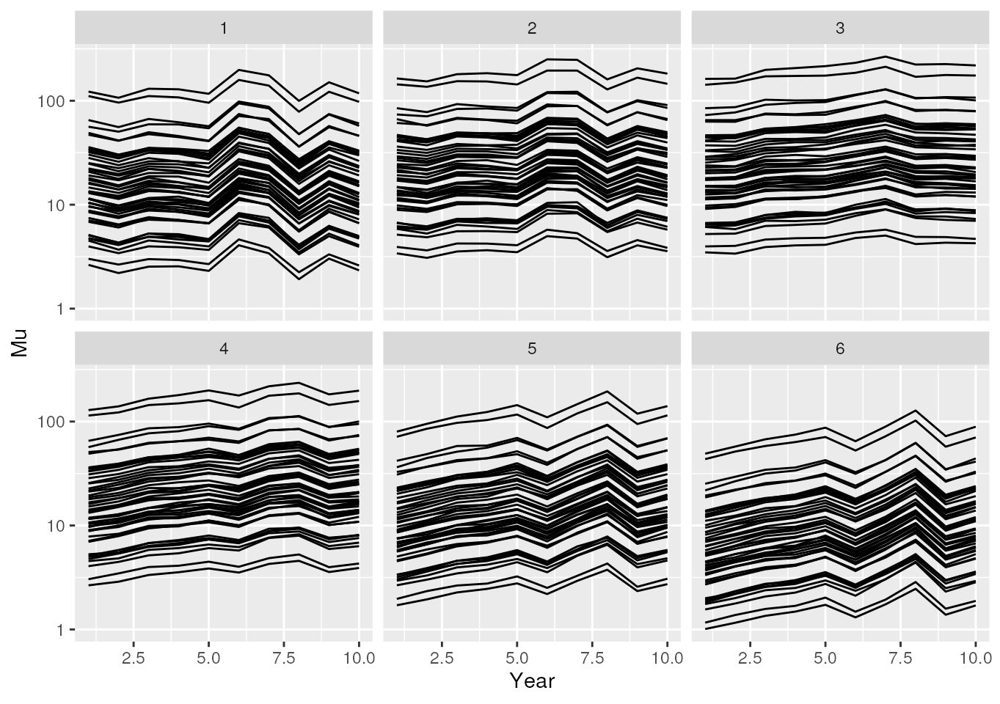
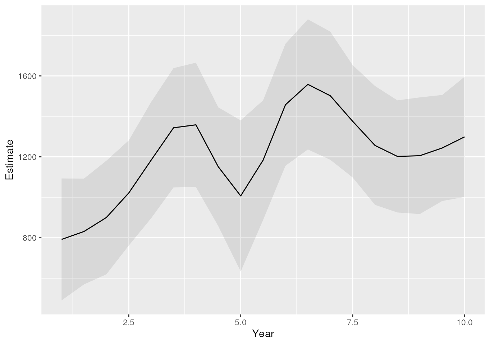
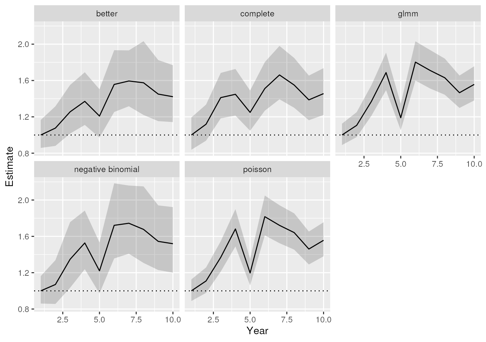
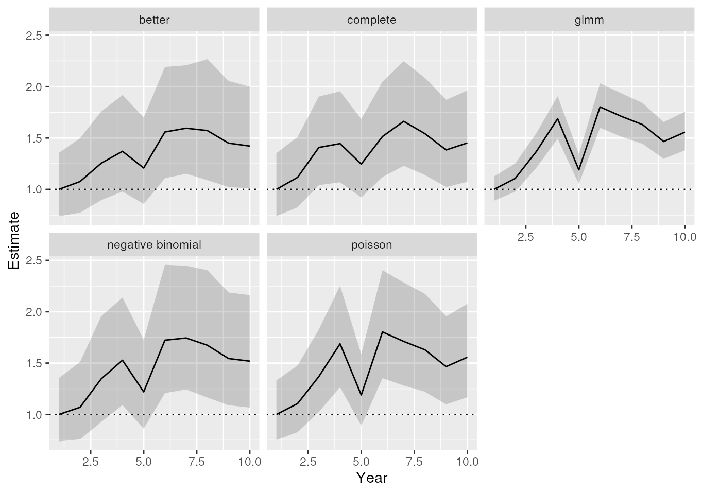

vignettes/impute.Rmd
impute.Rmdmultimput package
The multimput package was originally intended to provide
the data and code to replicate the results of Onkelinx, Devos, and Quataert (2016). This paper
is freely available at http://dx.doi.org/10.1007/s10336-016-1404-9. The
functions were all rewritten to make them more user-friendly and more
generic. In order to make the package more compact, we removed the
original code and data starting for version 0.2.6. However both the
original code and data remain available in the older
releases.
The imputations are based on a model \(Y \sim X \beta^*\) which the user has to specify. For a missing value \(i\) with covariates \(x_i\), we draw a random value \(y_i\) from the distribution of \(\hat{y}_i\). In case of a linear model, we sample a normal distribution \(y_i \sim N(\hat{y}_i, \sigma_i)\). An imputation set \(l\) holds an impute value \(y_i\) for each missing value.
With the missing values replaced by imputation set \(l\), the dataset is complete. So we can apply the analysis that we wanted to do in the first place. This can, but don’t has to, include aggregating the dataset prior to analysis. The analysis results in a set of coefficients \({\gamma_a}_l\) and their standard error \({\sigma_a}_l\). Of course, this set will depend on the imputed values of the imputation set \(l\). Another imputation set has different imputed values and will hence lead to different coefficients.
Therefore the imputation, aggregation and analysis is repeated for \(L\) different imputation sets, resulting in \(L\) sets of coefficients and their standard errors. They are aggregated by the formulas below. The coefficient will be the average of the coefficient in all imputation sets. The standard error of a coefficient is the square root of a sum of two parts. The first part is the average of the squared standard error in all imputation sets. The second part is the variance of the coefficient among the imputation sets, multiplied by a correction factor \(1 + \frac{1}{L}\).
\[\bar{\gamma}_a = \frac{\sum_{l = 1}^L{\gamma_a}_l}{L}\]
\[\bar{\sigma}_a = \sqrt{\frac{\sum_{l = 1}^J {{\sigma_a^2}_l}}{L} + (1 + \frac{1}{L}) \frac{\sum_{l = 1}^L({\gamma_a}_l - \bar{\gamma}_a) ^ 2}{L - 1}}\]
First, let’s generate a dataset and set some observations missing.
generateData() creates a balanced dataset with repeated
visits of a number of sites. Each site is visited several years and
multiple times per year. Have a look at the help-file of
generateData() for more details on the model.
library(multimput)
set.seed(123)
prop_missing <- 0.5
dataset <- generate_data(n_year = 10, n_period = 6, n_site = 50, n_run = 1)
dataset$Observed <- dataset$Count
which_missing <- sample(nrow(dataset), size = nrow(dataset) * prop_missing)
dataset$Observed[which_missing] <- NA
dataset$fYear <- factor(dataset$Year)
dataset$fPeriod <- factor(dataset$Period)
dataset$fSite <- factor(dataset$Site)
str(dataset)## 'data.frame': 3000 obs. of 10 variables:
## $ Year : int 1 2 3 4 5 6 7 8 9 10 ...
## $ Period : int 1 1 1 1 1 1 1 1 1 1 ...
## $ Site : int 1 1 1 1 1 1 1 1 1 1 ...
## $ Mu : num 11.36 9.31 11.33 10.98 9.79 ...
## $ Run : int 1 1 1 1 1 1 1 1 1 1 ...
## $ Count : num 8 2 10 21 2 2 13 8 10 4 ...
## $ Observed: num NA 2 10 NA 2 NA 13 NA NA NA ...
## $ fYear : Factor w/ 10 levels "1","2","3","4",..: 1 2 3 4 5 6 7 8 9 10 ...
## $ fPeriod : Factor w/ 6 levels "1","2","3","4",..: 1 1 1 1 1 1 1 1 1 1 ...
## $ fSite : Factor w/ 50 levels "1","2","3","4",..: 1 1 1 1 1 1 1 1 1 1 ...Variables in dataset
YearfYearPeriodfPeriodSitefSiteMuCountMu
ObservedCount variable with missing data
library(ggplot2)
ggplot(dataset, aes(x = Year, y = Mu, group = Site)) +
geom_line() +
facet_wrap(~Period) +
scale_y_log10()
We will create several models, mainly to illustrate the capabilities
of the multimput package. Hence several of the models are
not good for a real life application.
# a simple linear model
imp_lm <- lm(Observed ~ fYear + fPeriod + fSite, data = dataset)
# a mixed model with Poisson distribution
# fYear and fPeriod are the fixed effects
# Site are independent and identically distributed random intercepts
library(lme4)
imp_glmm <- glmer(
Observed ~ fYear + fPeriod + (1 | fSite),
data = dataset,
family = poisson
)This vignette requires the INLA package. It was build on a system without the INLA package. Please have look at the vignette on the website.
library(INLA)
# a mixed model with Poisson distribution
# fYear and fPeriod are the fixed effects
# Site are independent and identically distributed random intercepts
# the same model as imp_glmm
imp_inla_p <- inla(
Observed ~ fYear + fPeriod + f(Site, model = "iid"),
data = dataset,
family = "poisson",
control.compute = list(config = TRUE),
control.predictor = list(compute = TRUE, link = 1)
)
# the same model as imp_inla_p but with negative binomial distribution
imp_inla_nb <- inla(
Observed ~ fYear + fPeriod + f(fSite, model = "iid"),
data = dataset,
family = "nbinomial",
control.compute = list(config = TRUE),
control.predictor = list(compute = TRUE, link = 1)
)
# a mixed model with negative binomial distribution
# fPeriod is a fixed effect
# f(Year, model = "rw1") is a global temporal trend
# modelled as a first order random walk
# delta_i = Year_i - Year_{i-1} with delta_i \sim N(0, \sigma_{rw1})
# f(YearCopy, model = "ar1", replicate = Site) is a temporal trend per Site
# modelled as an first order autoregressive model
# Year_i_k = \rho Year_{i-1}_k + \epsilon_i_k with
# \epsilon_i_k \sim N(0, \sigma_{ar1})
dataset$YearCopy <- dataset$Year
imp_better <- inla(
Observed ~
f(Year, model = "rw1") +
f(YearCopy, model = "ar1", replicate = Site) +
fPeriod,
data = dataset,
family = "nbinomial",
control.compute = list(config = TRUE),
control.predictor = list(compute = TRUE, link = 1)
)Most models have a predict method. In such a case
impute() requires both a model and a
data argument. Note that this implies that one can apply an
imputation on any dataset as long as the dataset contains the necessary
variables.
inla do the prediction simultaneously with the model
fitting. Hence the model contains all required information and the
data is not used.
n_imp is the number of imputations. The default is
n_imp = 19.
# setting `parallel_configs = FALSE` was required to pass R CMD Check
# in practice you can use the default `parallel_configs = TRUE`
raw_inla_p <- impute(imp_inla_p, parallel_configs = FALSE)
raw_inla_nb <- impute(imp_inla_nb, parallel_configs = FALSE)
raw_better <- impute(imp_better, parallel_configs = FALSE)
raw_better_9 <- impute(imp_better, n_imp = 9, parallel_configs = FALSE)Suppose that we are interested in the sum of the counts over all
sites for each combination of year and period. Then we must aggregate
the imputations on year and period. The resulting object will only
contain the imputed response and the grouping variables. The easiest way
to have a variable like year both a continuous and factor is to add both
Year and fYear to the
grouping.
aggr_lm <- aggregate_impute(raw_lm, grouping = c("fYear", "fPeriod"), fun = sum)
aggr_glmm <- aggregate_impute(
raw_glmm, grouping = c("fYear", "fPeriod"), fun = sum
)
aggr_inla_p <- aggregate_impute(
raw_inla_p, grouping = c("fYear", "fPeriod"), fun = sum
)
aggr_inla_nb <- aggregate_impute(
raw_inla_nb, grouping = c("fYear", "fPeriod"), fun = sum
)
aggr_better <- aggregate_impute(
raw_better, grouping = c("fYear", "fPeriod"), fun = sum
)
aggr_better_9 <- aggregate_impute(
raw_better_9, grouping = c("fYear", "fPeriod"), fun = sum
)model_impute() will apply the model_fun to
each imputation set. The covariates are defined in the rhs
argument. So model_fun = lm in combination with
rhs = "0 + fYear + fPeriod" is equivalent to
lm(ImputedResponse ~ 0 + fYear + fPeriod, data = ImputedData).
The tricky part of this function the extractor argument.
This is a user defined function which must have an argument called
model. The function should return a data.frame
or matrix with two columns. The first column hold the
estimate of a parameter of the model, the second column
their standard error. Each row represents a parameter.
extractor_lm <- function(model) {
summary(model)$coefficients[, c("Estimate", "Std. Error")]
}
model_impute(
aggr_lm, model_fun = lm, rhs = "0 + fYear + fPeriod", extractor = extractor_lm
)## # A tibble: 15 × 5
## Parameter Estimate SE LCL UCL
## <fct> <dbl> <dbl> <dbl> <dbl>
## 1 fYear1 794. 155. 491. 1097.
## 2 fYear2 879. 146. 592. 1166.
## 3 fYear3 1186. 156. 880. 1492.
## 4 fYear4 1423. 157. 1116. 1730.
## 5 fYear5 905. 159. 593. 1217.
## 6 fYear6 1520. 155. 1216. 1825.
## 7 fYear7 1513. 165. 1189. 1837.
## 8 fYear8 1242. 154. 941. 1544.
## 9 fYear9 1196. 151. 901. 1492.
## 10 fYear10 1300. 153. 999. 1601.
## 11 fPeriod2 541. 134. 278. 803.
## 12 fPeriod3 452. 135. 187. 717.
## 13 fPeriod4 551. 151. 256. 846.
## 14 fPeriod5 -75.0 137. -343. 193.
## 15 fPeriod6 -470. 137. -738. -201.fYear
The extractor function requires more work from the user.
This cost is compensated by the high degree of flexibility. The user
doesn’t depend on the predefined extractor functions. This is
illustrated by the following examples.
extractor_lm2 <- function(model) {
cf <- summary(model)$coefficients
cf[grepl("fYear", rownames(cf)), c("Estimate", "Std. Error")]
}
model_impute(
aggr_lm, model_fun = lm, rhs = "0 + fYear + fPeriod",
extractor = extractor_lm2
)## # A tibble: 10 × 5
## Parameter Estimate SE LCL UCL
## <fct> <dbl> <dbl> <dbl> <dbl>
## 1 fYear1 794. 155. 491. 1097.
## 2 fYear2 879. 146. 592. 1166.
## 3 fYear3 1186. 156. 880. 1492.
## 4 fYear4 1423. 157. 1116. 1730.
## 5 fYear5 905. 159. 593. 1217.
## 6 fYear6 1520. 155. 1216. 1825.
## 7 fYear7 1513. 165. 1189. 1837.
## 8 fYear8 1242. 154. 941. 1544.
## 9 fYear9 1196. 151. 901. 1492.
## 10 fYear10 1300. 153. 999. 1601.Note that we pass extra arguments to the extractor
function through the extractor_args argument. This has to
be a list. We recommend to use a named list to avoid confusion.
library(mgcv)
new_set <- expand.grid(
Year = pretty(dataset$Year, 20),
fPeriod = dataset$fPeriod[1]
)
extractor_lm3 <- function(model, newdata) {
predictions <- predict(model, newdata = newdata, se.fit = TRUE)
cbind(predictions$fit, predictions$se.fit)
}
model_gam <- model_impute(
aggr_lm, model_fun = gam, rhs = "s(Year) + fPeriod",
extractor = extractor_lm3, extractor_args = list(newdata = new_set),
mutate = list(Year = ~as.integer(levels(fYear))[fYear])
)
model_gam <- cbind(new_set, model_gam)
ggplot(model_gam, aes(x = Year, y = Estimate, ymin = LCL, ymax = UCL)) +
geom_ribbon(alpha = 0.1) +
geom_line()
glm.nb
Suppose that we are interested in a yearly relative index taking into
account the average seasonal pattern. With a complete dataset (without
missing values) we could model it like the example below: a generalised
linear model with negative binomial distribution because we have counts
that are likely overdispersed. fYear models the yearly
index and fPeriod the average seasonal pattern. The
0 + part removes the intercept for the model. This simple
trick gives direct estimates for the effect of fYear.
Only the effects of fYear are needed for the index.
Therefore the extractor functions selects only the parameters who’s row
name contains fYear. In case that we want the first year to
be used as a reference (index year 1 = 100%), we can subtract the
estimate for this year from all estimates. The result are the indices
relative to the first year, but still in the log scale. Note that the
estimated index for year 1 will be 0 and \(log(100\%) = 0\).
library(MASS)
aggr_complete <- aggregate(
dataset[, "Count", drop = FALSE], dataset[, c("fYear", "fPeriod")], FUN = sum
)
model_complete <- glm.nb(Count ~ 0 + fYear + fPeriod, data = aggr_complete)
summary(model_complete)##
## Call:
## glm.nb(formula = Count ~ 0 + fYear + fPeriod, data = aggr_complete,
## init.theta = 31.78765186, link = log)
##
## Coefficients:
## Estimate Std. Error z value Pr(>|z|)
## fYear1 6.72514 0.09016 74.590 < 2e-16 ***
## fYear2 6.83730 0.09005 75.929 < 2e-16 ***
## fYear3 7.06993 0.08985 78.684 < 2e-16 ***
## fYear4 7.09550 0.08983 78.985 < 2e-16 ***
## fYear5 6.94750 0.08995 77.237 < 2e-16 ***
## fYear6 7.13813 0.08980 79.487 < 2e-16 ***
## fYear7 7.23272 0.08974 80.597 < 2e-16 ***
## fYear8 7.16345 0.08979 79.784 < 2e-16 ***
## fYear9 7.05221 0.08987 78.475 < 2e-16 ***
## fYear10 7.10071 0.08983 79.046 < 2e-16 ***
## fPeriod2 0.36211 0.08027 4.511 6.44e-06 ***
## fPeriod3 0.41944 0.08024 5.227 1.72e-07 ***
## fPeriod4 0.34524 0.08027 4.301 1.70e-05 ***
## fPeriod5 -0.02515 0.08045 -0.313 0.755
## fPeriod6 -0.47112 0.08076 -5.833 5.44e-09 ***
## ---
## Signif. codes: 0 '***' 0.001 '**' 0.01 '*' 0.05 '.' 0.1 ' ' 1
##
## (Dispersion parameter for Negative Binomial(31.7877) family taken to be 1)
##
## Null deviance: 541101.695 on 60 degrees of freedom
## Residual deviance: 60.596 on 45 degrees of freedom
## AIC: 852.28
##
## Number of Fisher Scoring iterations: 1
##
##
## Theta: 31.79
## Std. Err.: 5.96
##
## 2 x log-likelihood: -820.275
extractor_logindex <- function(model) {
coef <- summary(model)$coefficients
log_index <- coef[grepl("fYear", rownames(coef)), c("Estimate", "Std. Error")]
log_index[, "Estimate"] <- log_index[, "Estimate"] -
log_index["fYear1", "Estimate"]
log_index
}Now that we have a relevant model and extractor function, we can apply them to the aggregate imputed datasets.
model_glmm <- model_impute(
object = aggr_glmm, model_fun = glm.nb, rhs = "0 + fYear + fPeriod",
extractor = extractor_logindex
)
model_p <- model_impute(
object = aggr_inla_p, model_fun = glm.nb, rhs = "0 + fYear + fPeriod",
extractor = extractor_logindex
)
model_nb <- model_impute(
object = aggr_inla_nb, model_fun = glm.nb, rhs = "0 + fYear + fPeriod",
extractor = extractor_logindex
)
model_better <- model_impute(
object = aggr_better, model_fun = glm.nb, rhs = "0 + fYear + fPeriod",
extractor = extractor_logindex
)
model_complete <- extractor_logindex(model_complete)
colnames(model_complete) <- c("Estimate", "SE")
library(dplyr)
model_complete <- model_complete |>
as.data.frame() |>
mutate(
LCL = qnorm(0.025, Estimate, SE),
UCL = qnorm(0.975, Estimate, SE),
Parameter = paste0("fYear", sort(unique(dataset$Year)))
)
covar <- data.frame(
Year = sort(unique(dataset$Year))
)
# combine all results and add the Year
parameters <- rbind(
cbind(covar, model_glmm, Model = "glmm"),
cbind(covar, model_p, Model = "poisson"),
cbind(covar, model_nb, Model = "negative binomial"),
cbind(covar, model_better, Model = "better"),
cbind(covar, model_complete, Model = "complete")
)
# convert estimate and confidence interval to the original scale
parameters[, c("Estimate", "LCL", "UCL")] <- exp(
parameters[, c("Estimate", "LCL", "UCL")]
)
ggplot(parameters, aes(x = Year, y = Estimate, ymin = LCL, ymax = UCL)) +
geom_hline(yintercept = 1, linetype = 3) +
geom_ribbon(alpha = 0.2) +
geom_line() +
facet_wrap(~Model)
inla
The example below does something similar. Two things are different:
1) instead of glm.nb we use inla to model the
imputed totals. 2) we model the seasonal pattern as a random intercept
instead of a fixed effect.
extractor_inla <- function(model) {
fe <- model$summary.fixed[, c("mean", "sd")]
log_index <- fe[grepl("fYear", rownames(fe)), ]
log_index[, "mean"] <- log_index[, "mean"] - log_index["fYear1", "mean"]
log_index
}
model_p <- model_impute(
object = aggr_glmm, model_fun = inla,
rhs = "0 + fYear + f(fPeriod, model = 'iid')",
model_args = list(family = "nbinomial"), extractor = extractor_inla
)
model_nb <- model_impute(
object = aggr_inla_nb, model_fun = inla,
rhs = "0 + fYear + f(fPeriod, model = 'iid')",
model_args = list(family = "nbinomial"), extractor = extractor_inla
)
model_better <- model_impute(
object = aggr_better, model_fun = inla,
rhs = "0 + fYear + f(fPeriod, model = 'iid')",
model_args = list(family = "nbinomial"), extractor = extractor_inla
)
m_complete <- inla(
Count ~ 0 + fYear + f(fPeriod, model = "iid"), data = aggr_complete,
family = "nbinomial"
)
model_complete <- extractor_inla(m_complete)
colnames(model_complete) <- c("Estimate", "SE")
model_complete <- model_complete |>
as.data.frame() |>
mutate(
LCL = qnorm(0.025, Estimate, SE),
UCL = qnorm(0.975, Estimate, SE),
Parameter = paste0("fYear", sort(unique(dataset$Year)))
)
# combine all results and add the Year
parameters <- rbind(
cbind(covar, model_glmm, Model = "glmm"),
cbind(covar, model_p, Model = "poisson"),
cbind(covar, model_nb, Model = "negative binomial"),
cbind(covar, model_better, Model = "better"),
cbind(covar, model_complete, Model = "complete")
)
# convert estimate and confidence interval to the original scale
parameters[, c("Estimate", "LCL", "UCL")] <- exp(
parameters[, c("Estimate", "LCL", "UCL")]
)
ggplot(parameters, aes(x = Year, y = Estimate, ymin = LCL, ymax = UCL)) +
geom_hline(yintercept = 1, linetype = 3) +
geom_ribbon(alpha = 0.2) +
geom_line() +
facet_wrap(~Model)